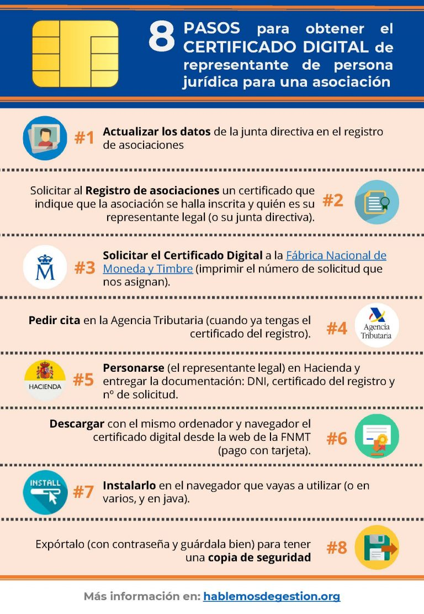

¿Para qué sirve? ¿Dónde se usa?¿Cómo lo obtenemos?
En la teoría nos puede quedar relativamente claro lo que puede ser un certificado, pero, ¿Para qué sirve? ¿Dónde se usa?¿Cómo lo obtenemos? Pues bien,
¿Dónde Se Usa?
Agencia Estatal de Administración Tributaria
La AEAT es el organismo público encargado de la gestión y recaudación de los tributos en España.
Sus funciones incluyen la presentación de declaraciones de impuestos, la asistencia a contribuyentes, la gestión de recursos y reclamaciones, y la administración de aduanas.
BOE
El BOE es la gaceta oficial del Reino de España.
Publica disposiciones legales, anuncios oficiales y otros documentos autorizados por el Estado.
Puede publicarse cualquier día de la semana y su contenido es aprobado por Real Decreto y con la aprobación de la Presidencia del Gobierno.
Seguridad Social
Es el sistema público de protección social en España.
Proporciona prestaciones económicas y sociales a trabajadores, pensionistas y sus familiares.
Incluye servicios como afiliación, cotización, prestaciones sanitarias y gestión de empresas.
¿Para Qué Sirve?
El certificado digital tiene múltiples usos y aplicaciones tanto en el ámbito privado como en el público. A continuación, te detallo algunas de sus funciones más importantes:
Ámbito privado:
- Identificación en trámites online: El certificado digital permite identificar al titular de manera segura en cualquier trámite realizado en línea.
- Firma electrónica: Puedes utilizarlo para firmar contratos, documentos y comunicaciones electrónicas.
- Acceso a servicios digitales: Facilita el acceso a plataformas y servicios digitales que requieren autenticación.
Ámbito público:
- Presentación y liquidación de impuestos: Con el certificado digital, puedes presentar declaraciones de impuestos como el IRPF o el IVA de forma electrónica.
- Trámites ante la Seguridad Social: Permite realizar gestiones relacionadas con la Seguridad Social, como solicitar prestaciones o consultar datos personales.
- Multas de tráfico: Consulta y trámite de multas de tráfico.
Entre muchos otros, un certificado digital se utiliza casi en todo en la actualidad y por eso es vital poseer uno, pero ¿Cómo lo conseguimos? A partir de una serie de pasos que explicaré en la imagen que se encuentra justo abajo.
¿Cómo Lo Obtenemos?
